二、在线客服
1. 跳过消息中心
（1）功能开关：开启后，用户的客服消息直接跳转至客服页面，不经过消息中心。
（2）使用场景：适用于需要用户快速联系在线客服的情况。
（3）开启后的场景展示：
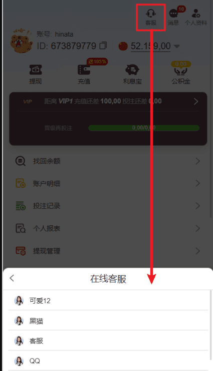
2. 在线客服开关
（1）功能开关：控制在线客服功能的启用/关闭。
（2）状态说明：
① 绿色（开启）：用户可通过页面或APP联系客服。
② 灰色（关闭）：用户无法通过页面或APP联系客服。
3. 设置客服页面顶部内容
（1）设置内容
① 语言：设置后对应语言按照设置内容展示，未设置的语言按照默认展示,如语言部分选择多种语言，则对应多种语言均按照设置内容展示
② 形象图：形象图不设置则只展示标题与介绍语
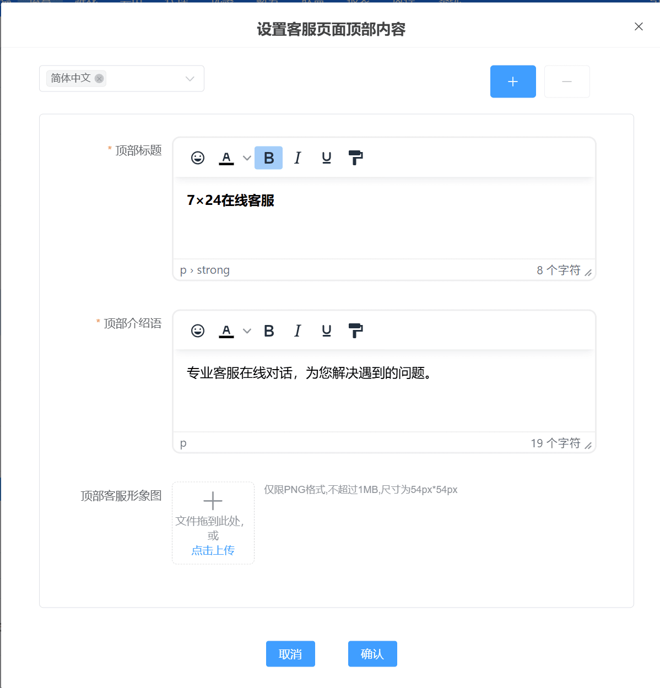
（2）前端示意图
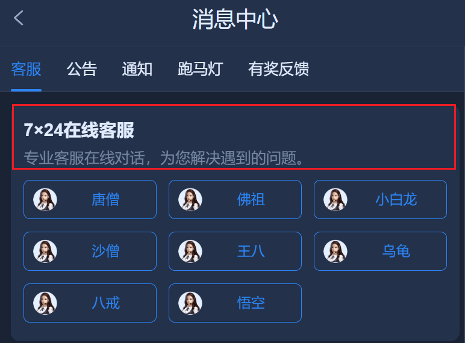
4. 客服设置
4.1、列表说明
在此部分，您可以查看和管理所有在线客服。管理客服的功能包括：
① 新增客服：点击“新增”按钮，进入配置页面并进行设置。
② 编辑客服：点击“修改”按钮，编辑客服信息。
③ 删除客服：点击“删除”按钮，移除不需要的客服。
④ 开关客服：点击“开关”按钮，开启关闭对应客服。
⑤ 排序：通过拖动"十字"可调整客服条目在列表中的顺序，点击"置顶"可将客服排序调整为第一个。
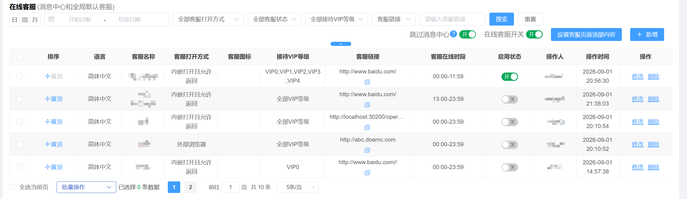
4.2、新增在线客服
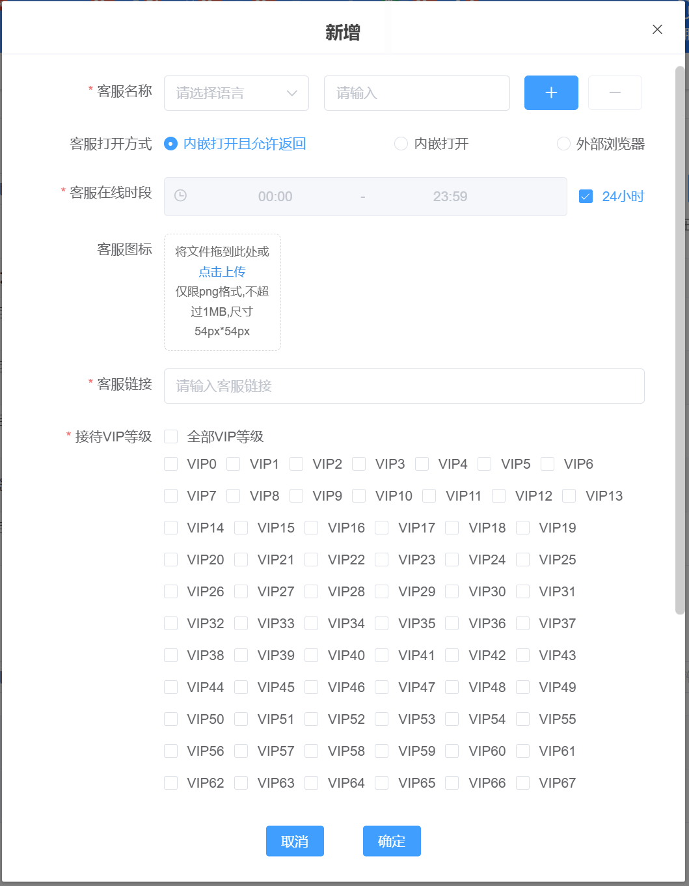
（1）语言和客服名称设置
客服入口支持多语言定制。配置要求如下：
① 每个语言只能配置一次，同个语言不能重复选择，以免系统无法分辨
② 用户可根据需求，在语言列表中选择需要配置的语言，并为其指定客服名称。
（2）客服链接的获取与更改
① 在第三方后台获取客服链接
以下以 LiveChat 为例：进入 LiveChat 后台，选择 “Settings” > “Chat page”，复制 “Your chat page link” 中的链接（例如：https://direct.lc.chat/16747224/）。
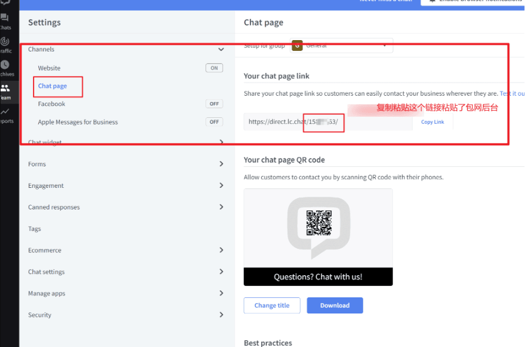
②回到WG后台客服配管理界面
将链接粘贴到【客服管理-在线客服-【输入客服链接】，确保客户可访问聊天页面。
（3）客服链接的打开方式设置
客服链接支持两种打开方式：
① APP内部打开：链接在APP内打开，无需使用外部浏览器，避免用户流失，三方不支持内嵌打开才使用外部浏览器。
② 外部浏览器打开：链接在默认浏览器中打开。
注意：APP支持两种方式，H5仅支持外部浏览器打开
（4）客服在线时段
① 设置后对应客服只在设置的时间段内展示在客服列表内
（5）客服图标
① 不设置图标将使用默认图表展示
（6）接待VIP等级
① 设置后只有对应的VIP等级的用户才能看到该客服信息
5. H5端悬浮客服设置教程
按以下步骤设置悬浮客服，让用户随时联系客服。（H5和APP使用同套配置）
（1） 选择客服系统（WG客服系统、LiveChat、其他系统）。
（2） 选择悬浮客服显示在全部页面或仅首页，WG客服默认展示全部页面。
①首页：客服图标只在首页显示。
②全部页面：客服图标出现在每个页面。
（3）填写参数
①WG客服：只需开启WG客服开关，悬浮客服悬浮客服功能即可在 H5 与 App 端自动生效。
②LiveChat： 只需完成 License ID 的配置，悬浮客服功能即可在 H5 与 App 端自动生效。
③ 其他系统：添加悬浮客服图标，和设置客服链接。
后端设置图：
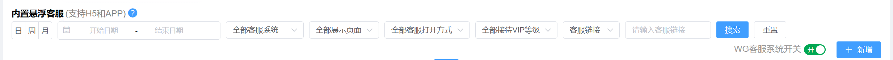
前端示意图：
展开全部
5.1 WG 悬浮客服的配置方式
（1）登陆客服系统跳转到客服后台配置客服账号
（2）开启WG客服系统开关
5.2 LiveChat 悬浮客服的配置方式
（1）如何在WG包网后台配置
① 重要提示：H5和APP使用同套配置
② 填写配置项
a. 选择悬浮客服显示在全部页面或首页。
b. Group id：LiveChat 后台团队的ID，填写可选。没有填写，悬浮客服不启用。
c. License id：LiveChat 提供的许可ID，只有填写了 Group id 后，这个才是必填项。
d.接待VIP等级：设置后只有对应的VIP等级的用户才能看到悬浮客服
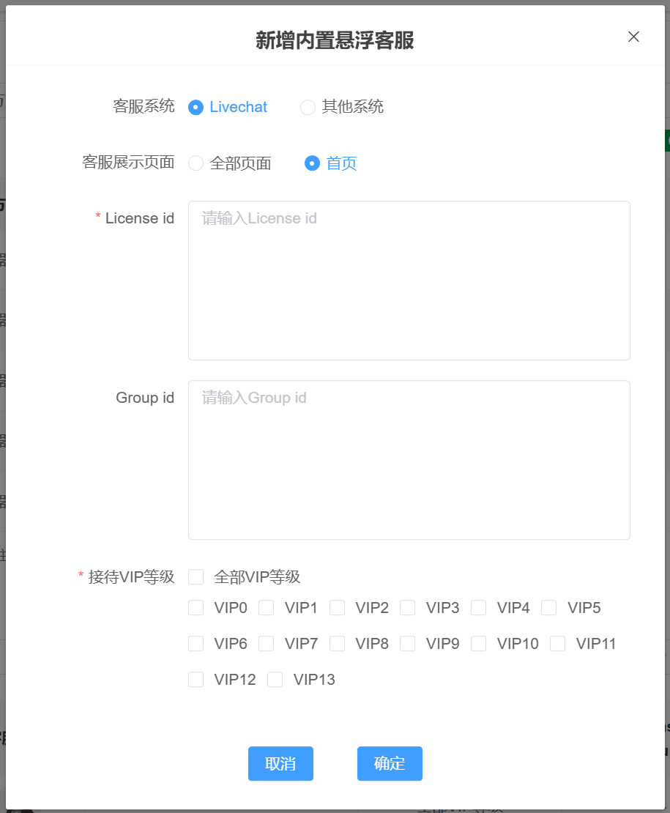
(2) 如何从 LiveChat 后台获取对应的 ID
① 登录 LiveChat 后台：进入 LiveChat 后台，确保您有权限查看团队设置。
② 获取 Group id：在左侧菜单选择 Team>Groups 页面， 找到要配置的 Group，点击组名称。 在右侧 Details 面板中，找到 Group id。
③ 获取 License id： 在后台选择 Settings > Chat page>"Your chat page link" 中，链接的数字部分（如 https://direct.lc.chat/xxxxx/ 中的 xxxxx）就是 License id。
④ 复制 ID 并返回 WG包网后台:将 Group id 和 License id 复制后，返回 WG包网后台，并将这两个 ID 填入配置页面。
(3) 常见问题解答
① 如果没有填写 Group id，SDK 会怎样？
没有填写 Group id，LiveChat SDK 就无法启用。
② License id 和 Group id 的关系是什么？
这两个 ID 配套使用，只有填写了 Group id 后，才需要填写 License id。
③ 如何确保配置生效？
配置完成后，可以在 WG包网后台或 LiveChat 后台测试聊天功能，确保能正常工作。
④ ID的含义
License ID：这是授权 ID，表明 SDK 已通过授权，可以正常使用。
Group ID：这是团队组 ID，用来区分不同的客服组。填了 Group id 后，必须填写 License id。
5.3 其他客服系统 悬浮客服的配置方式
（1）如何在WG包网后台配置其他客服系统
1 重要提示：H5和APP使用同套配置
2 填写配置项
3 选择悬浮客服显示在全部页面或首页。
4. 客服图标：展示在全部页面或首页的悬浮图标
5 客服链接：配置连接后，点击跳转至该客服系统
6 接待VIP等级：设置后只有对应的VIP等级的用户才能看到悬浮客服
1、LiveChat配置 官网地址：https://www.livechat.com/
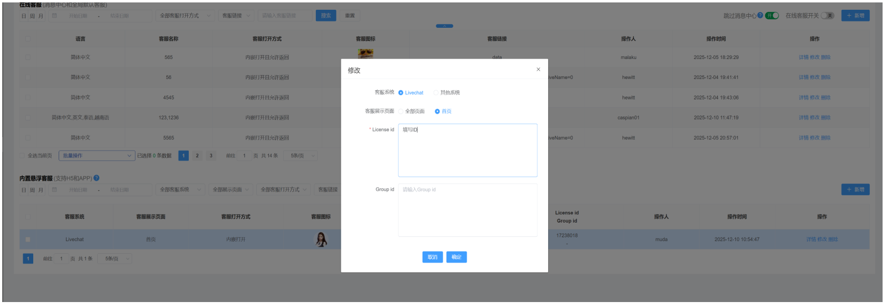
前端展示
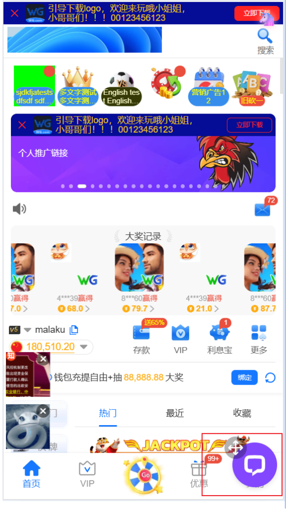
客服 可拖拽
登陆后 透传name 参数到三方 示例： xxx(1234567)
2、其他客服配置
变量参数示例：
$CustomerAccountAndId：用户名及id; 替换后示例 ： 71ikl8c9(950474043)
$CustomerAccount：用户名 ; 替换后示例: 950474043
$CustomerId：平台id ；替换后示例: 71ikl8c9
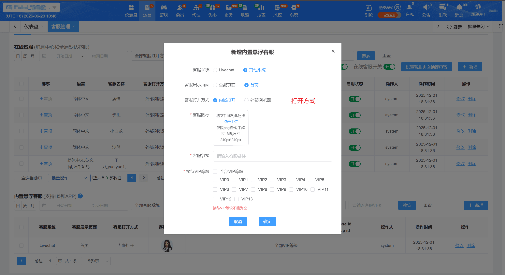
2.1: qiabot配置、显示及参数透传示例
2.1.1 获取客服地址，有1，2，3，4四种方式，推荐使用方法4，方法1为官方提供的地址
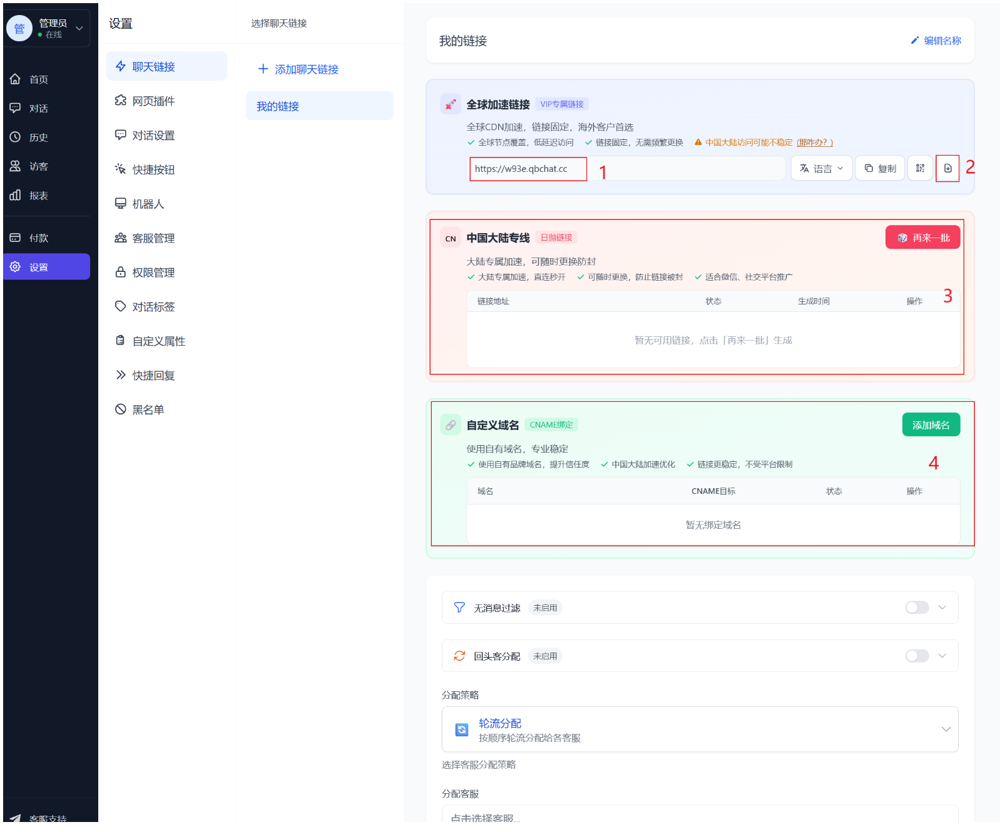
2.1.2 自定义参数配置 （可咨询客服如何传递）
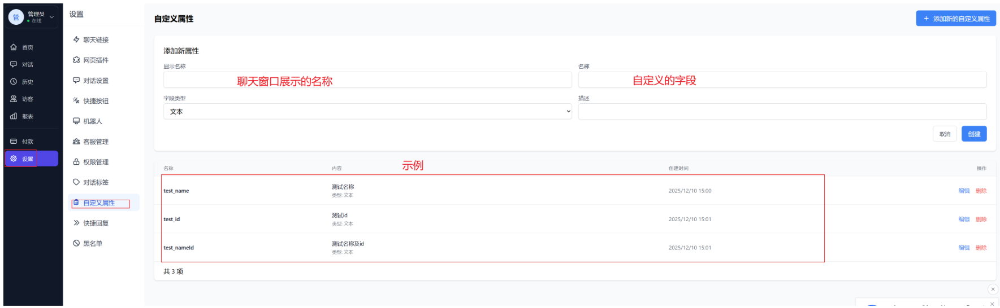
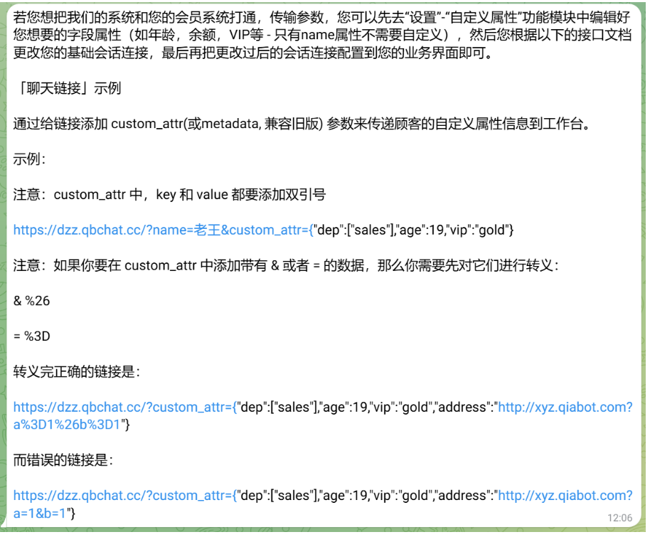
2.1.3 WG系统内如何配置
按官方提供的示例 配置地址
https://w93e.qbchat.cc?name=$CustomerAccountAndId&custom_attr={"test_name":"$CustomerId","test_id":"$CustomerAccount","test_nameId":"$CustomerAccountAndId"}
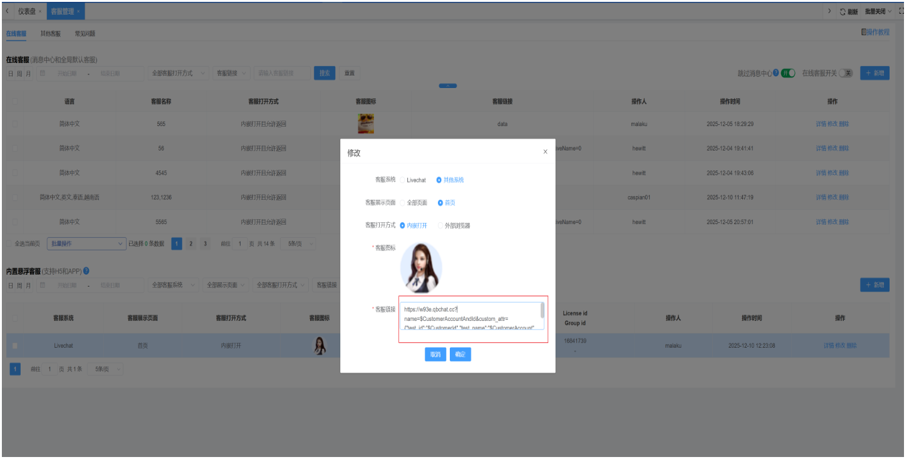
C端未登陆 客服显示
原教程图片无法取得：file-read-1959111.png
C端已登陆 客服显示
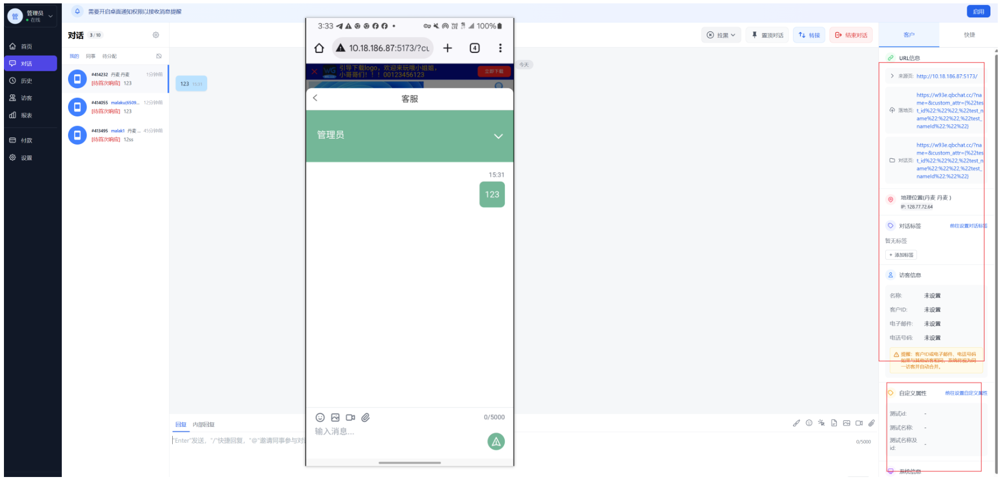
2.2 美洽 与qiabot 配置类似
2.2.1 配置文档 https://www.meiqia.com/help/article/javascript/#e3808ce8818ae5a4a9e993bee68ea5e3808de4bca0e98092e9a1bee5aea2e4bfa1e681af
自定义参数为 metadata ，配置示例：
域名?metadata={"test_name":"$CustomerId","id":"$CustomerAccount","test_nameId":"$CustomerAccountAndId"}